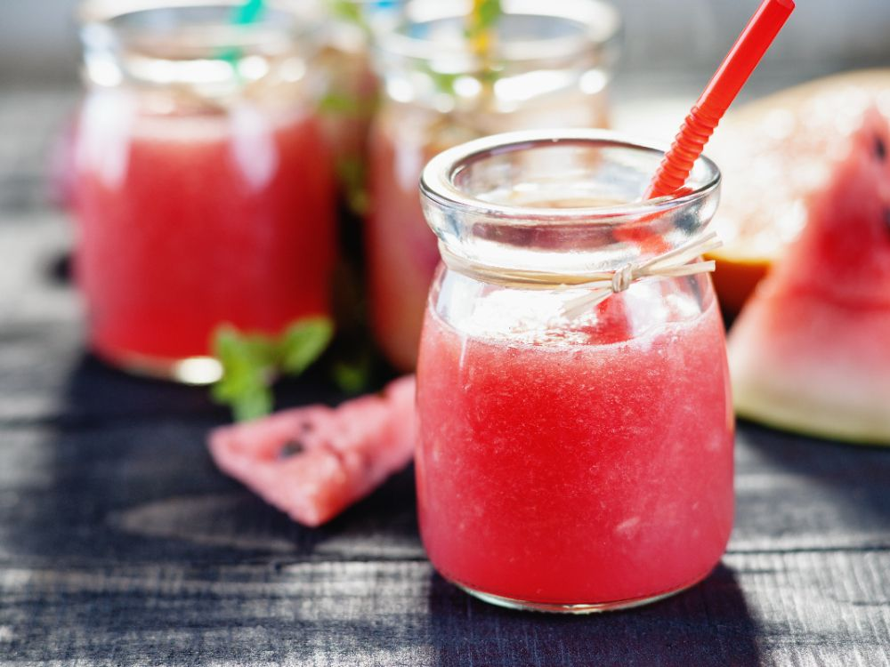

Ingredienser:
- 800g vattenmelon
- 0,5 dl flädersaft, koncetrerad
- 2 msk limejuice
- 2 dl isbitar
- Toppa med citronmellis, myntablad
Gör så här:
- Skär vattenmelonen i skivor, pilla bort kärnorna och ta bort skalet.
- Mixa melonbitar med flädersaft, lime och is. Använd en blender, matberedare kan gå sönder om isen är för hård.
- Servera i glas och dekorera med citronmeliss eller myntablad.

En fräsch, god och otroligt läcker smoothie för alla sommartillfällen. Ta med på picknicken, bjuda på, eller bara för att det är gott.